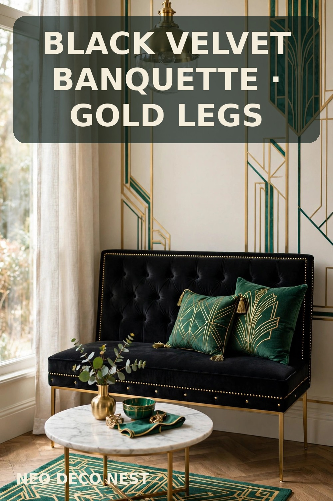
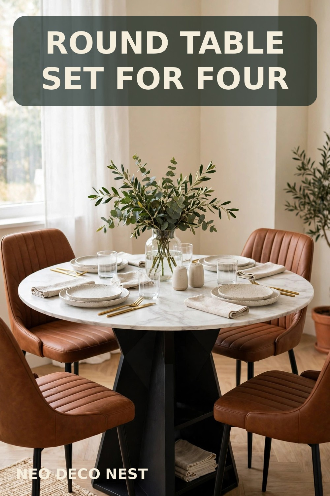
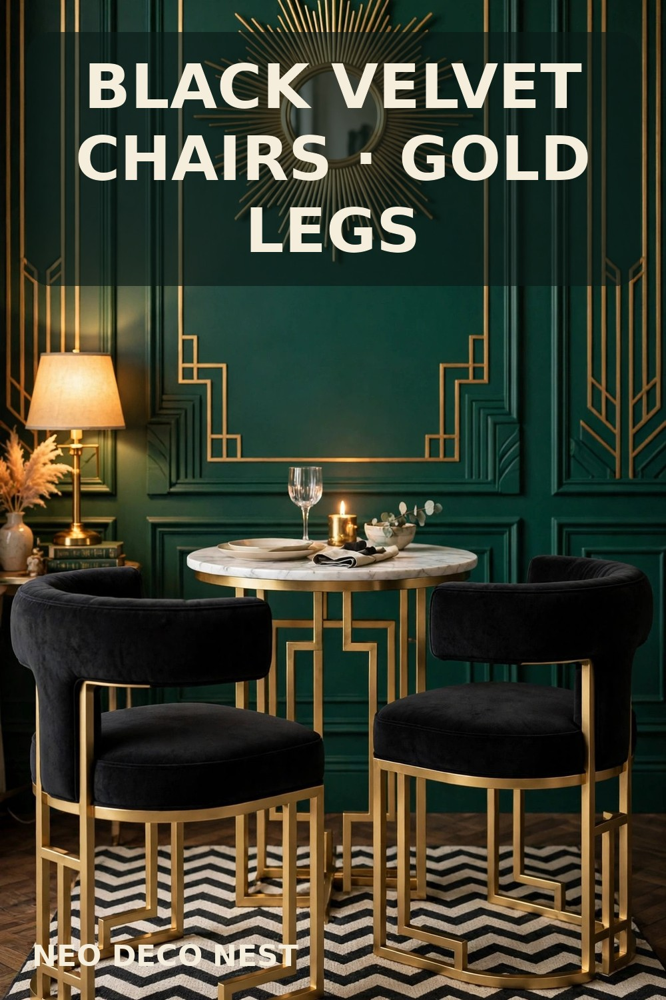
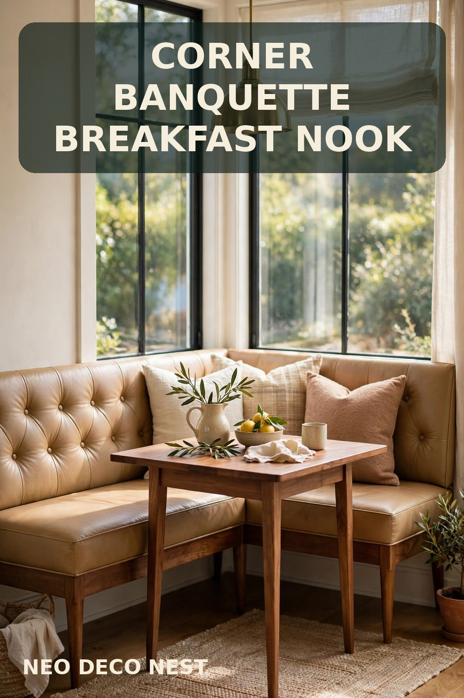
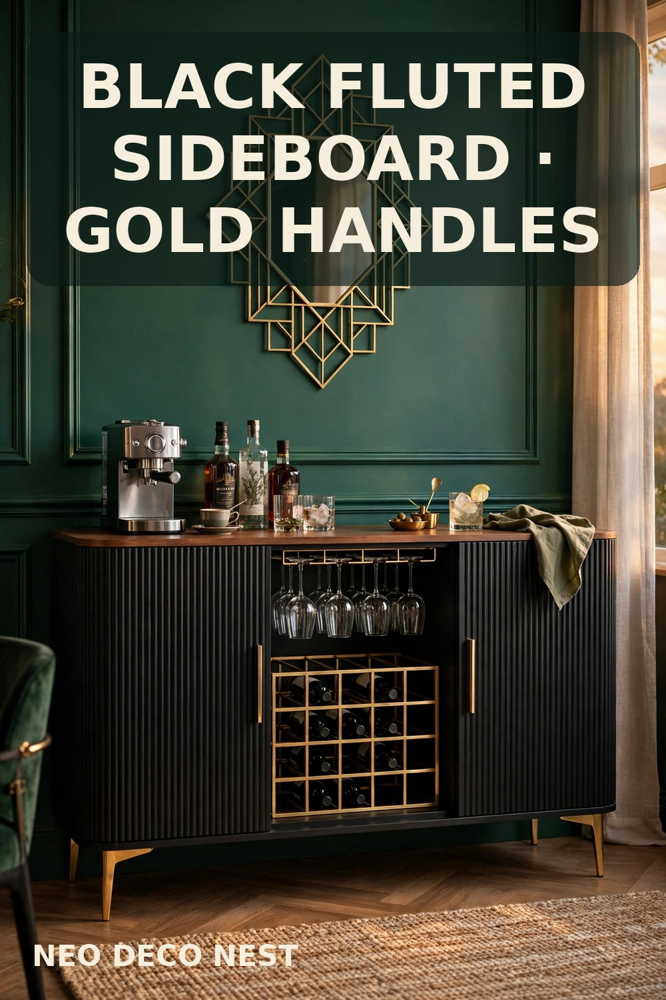

Neo Deco Dining Room Ideas: Velvet Banquette, Faux Marble Table and Fluted Sideboard
This post contains affiliate links. As an Amazon Associate I earn from qualifying purchases. If you buy through these links, we may earn a commission at no extra cost to you.
Images on this page are styled inspiration renders created for Neo Deco Nest — the Amazon listing shows the exact product, colors and dimensions.
A Neo Deco dining room starts with one anchor and builds out in velvet, marble and brass: a tufted banquette against the wall, a round table in the middle, velvet chairs around it, and a fluted sideboard holding the glassware. These are the five pieces behind our Neo Deco Dining Ideas board — no renovation, no contractor, just five shoppable pieces.

Shenyon Black Velvet Banquette Bench, Button-Tufted Back, Gold Legs, 45.6 in
A 45.6-inch black velvet banquette bench with a button-tufted back, gold nailhead trim and gold metal legs. Set it against the wall beside a small round table and the dining corner is done — 1920s glamour with no built-ins. An honest note: this one is velvet, not leather, so the Deco comes from the tufting and the black-and-gold pairing, not from a leather finish.

Miereirl Round Dining Table Set for 4, Faux Marble Top, Black Pedestal, 47.3 in
A round dining table set for four in one box: a white faux marble top on a black pedestal with a storage shelf, plus four channel-tufted chairs in warm brown. At 47.3 inches it fits a small dining corner, and the set means no hunting for chairs that match. Two honest notes: the top is faux marble, not natural stone, and the pedestal is black, not gold — the Deco here is the round shape, the tufted chairs and the black-white-brown contrast.

Hyfirm Black Velvet Barrel Dining Chairs, Set of 2, Gold Metal Legs
A pair of black velvet barrel chairs with open backs and gold metal legs. They are the quickest way to pull a plain table into the Neo Deco story: black velvet, gold legs, done. The chairs themselves are plain velvet — the chevron in the styling comes from the rug underneath, not from the chairs.

Baxton Studio Arvid Corner Breakfast Nook Set, Tan Faux Leather, Walnut, 2-Piece
A banquette breakfast nook without the carpentry: two tan faux leather benches — one straight, one corner — with button tufting and walnut legs that meet in an L. Tuck the set into a kitchen or dining corner with a small table and it reads as a built-in booth. Note that this is the two-piece bench set only; it does not include a table.

ARTPOWER Black Fluted Sideboard, Gold Handles, 48 in
A 48-inch black fluted sideboard with gold handles and tapered legs — the anchor piece of the whole dining room. Two Deco-textured doors flank an open center section with a hanging glass rack above a gold wine bottle rack, and the top surface has a warm walnut tone. Set it along the dining wall with a geometric mirror above it and the room reads Neo Deco even before the table is set.
Every piece here was first featured on our Pinterest board. Follow Neo Deco Nest on Pinterest for a new Neo Deco find every day.